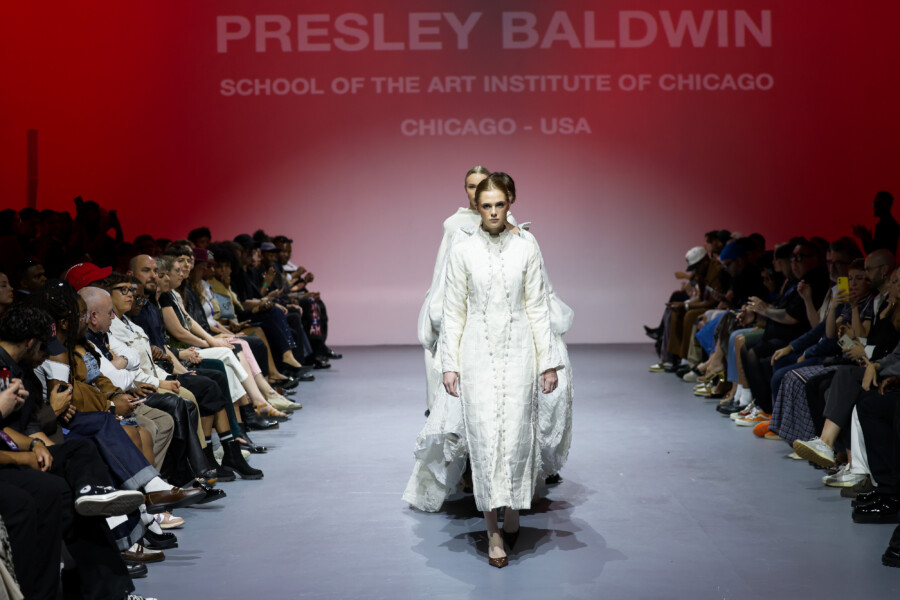

School of the Art Institute of Chicago Fashion Design Runway Presentation 2026
The School of the Art Institute of Chicago (SAIC) invites you to an evening celebrating the next generation of fashion designers.
Join us on May 1 for the annual runway presentation featuring the Senior Capstone collections of SAIC’s Fashion Design students.
Arrive in the middle of it…
This year’s showcase, In Media Res, draws inspiration from the literary device of starting a story in the middle of the action. Rather than a traditional introduction, the runway presents the senior Capstone collections as an ongoing dialogue—where months of work meet a singular, transformative moment. The runway show will take place at 167 N Green St. in Fulton Market.